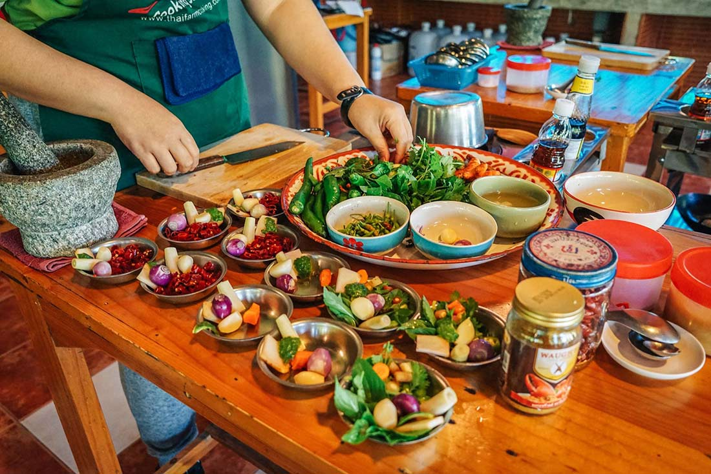

Cooking classes
At Yoko's Kitchen we offer hands-on
Japanese cooking classes designed for
all skill levels. Whether you are a
complete beginner or an experienced
home cook, our classes guide you step
by step through authentic techniques
and traditional flavours.
Each session focuses on fresh ingredients,
balance of taste, and simple
presentation.
You will learn knife skills, seasoning techniques,
and the cultural background behind each dish.
Classes are small to ensure personal guidance
and a relaxed atmosphere.By the end of the course,
you will be confident recreating classic Japanese meals in your own kitchen.
-
Italian Pasta Masterclass
📅 7 March 2026 (Saturday)
Learn to make fresh pasta from scratch: tagliatelle, ravioli, and classic sauces. -
Asian Street Food Workshop
📅 10 March 2026 (Tuesday)
We will prepare popular dishes such as pad thai, spring rolls, and Korean fried chicken. -
French Pastry Basics
📅 12 March 2026 (Thursday)
Croissants, éclairs, and crème brûlée - classic French desserts. -
Mediterranean Flavours Evening
📅 15 March 2026 (Sunday)
The tastes of Greek, Spanish, and Italian cuisine in one evening - tapas, seafood, and fresh salads.